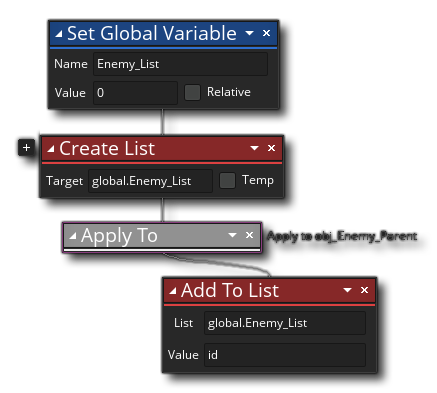

La description
Cette action peut être utilisée pour ajouter une nouvelle valeur (de n'importe quel type de données) à la liste, et cette valeur sera ajoutée à la fin. Vous fournissez la variable qui stocke l'index de liste (tel que renvoyé par l'action Créer une liste ) et la valeur à stocker.
Syntaxe de l'action:

Arguments:
Argument La description List L'index (stocké dans une variable) de la liste à ajouter à Value La valeur à ajouter dans la liste
Exemple:
Le code de bloc d'action ci-dessus crée une variable de portée globale, puis crée une nouvelle structure de données de liste, en affectant sa valeur d'index à la variable globale. La portée est ensuite modifiée pour que toutes les instances de l'objet "obj_Enemy_Parent" ajoutent leur valeur d'ID d'instance unique dans la liste.